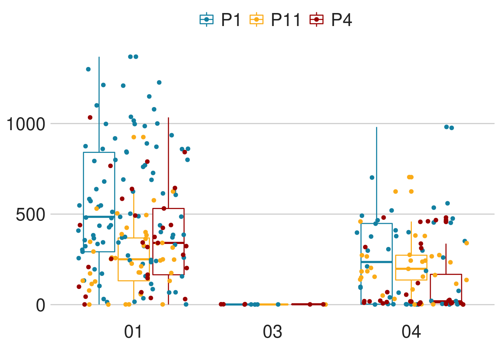
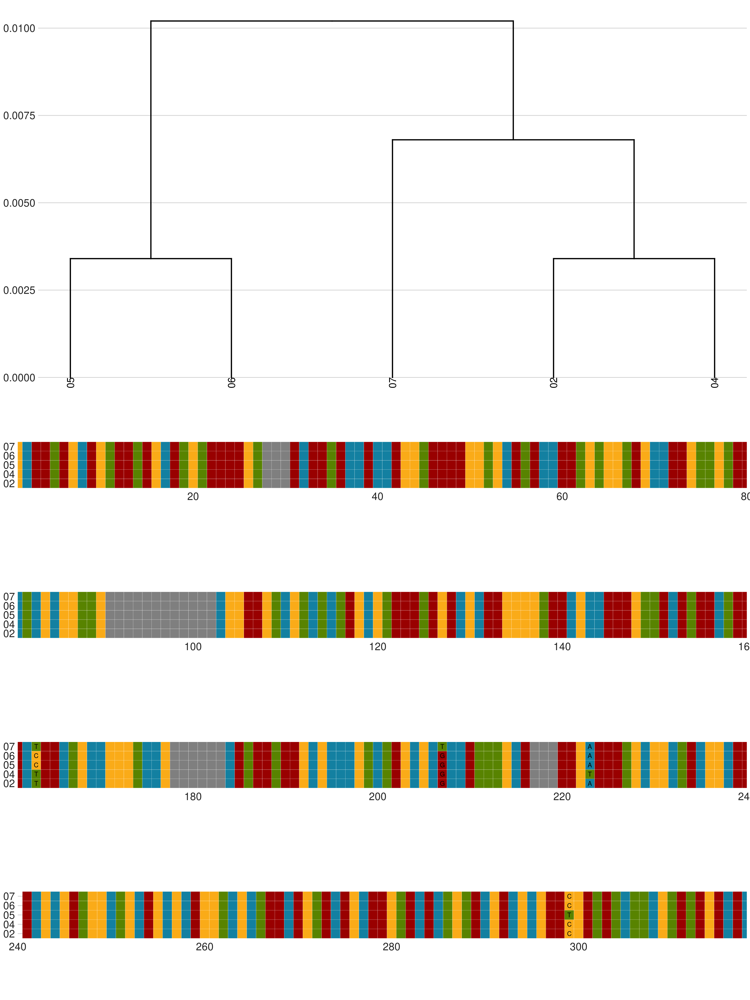
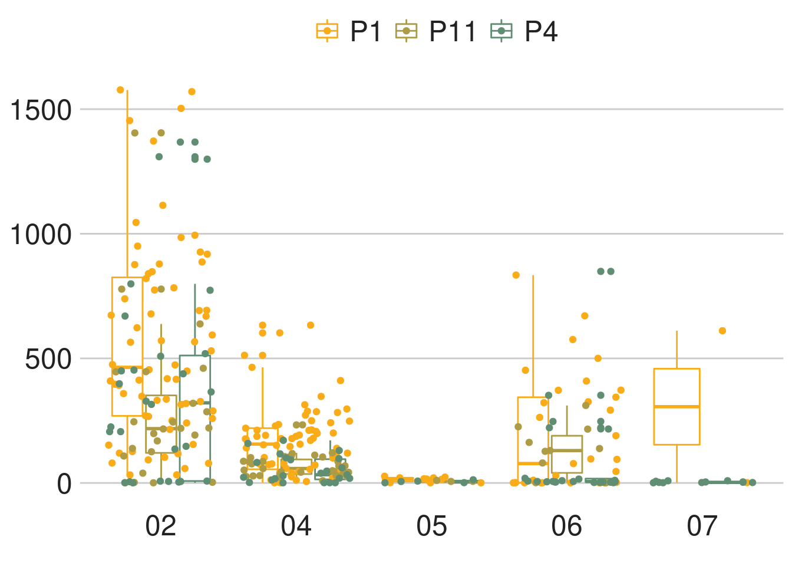

Functional groups
Summary statistics for each of the functional groups declared in the app.
The app includes the P1 and P11 naive datasets and the P4 non-naive dataset.
For P1 and P11 the following filtration criteria were applied:
- Functional sequence, no stop codons or frame shifts.
- Sequences which start from position 1 of the V gene.
- Sequences which didn’t have gaps open (-) and didn’t include any N’s
- After changing into group annotations, sequences which had more than a single assignment in naive repertoires were remove.
The groups were created with similarity of 95% based on complete linkage and functional sequences and up to position 318.
IGHV1-18
The group of IGHV1-18 includes 4 alleles, 4 out of the alleles are functional.
For each allele we counted the number of appearances across the population, any appearance was considered valid.

Based on the viewd alleles, we calculated the distance between the germline sequences.

To examine the potential cutoff we observed the sequence depth for each allele

We set an initial cutoff of \(0.5%\) to determine the potential genotype priors. For this cutoff we examined the zygousity state, such as homozygousity, heterozygousity and so on.
With the selected cutoff we saw that there are 3 zygousity states.
From the plots we can that the dominantes alleles 01 and 04. They appear in all states. Alleles 01 and 03 are closer to eachother, hence in state 3 for the threshold of \(0.5%\) I suspect that the sequences are mis-assigned and should be allele 01. Otherwise we should have seen the allele in one of the other stated as well.
Further the relations between 01 and 04 tends to heterozygousity with equal usage, thus the appearance of the lowly expressed allele in state 2 are likely erroneous.
From the results we belive that the cutoff for this group should be closer to \(20%\), and for the adjusted states the allele combinations and the relations are stated in the table below.
IGHV1-2
The group of IGHV1-2 includes 7 alleles, 7 out of the alleles are functional.
For each allele we counted the number of appearances across the population, any appearance was considered valid.

Based on the viewd alleles, we calculated the distance between the germline sequences.

To examine the potential cutoff we observed the sequence depth for each allele

We set an initial cutoff of \(0.5%\) to determine the potential genotype priors. For this cutoff we examined the zygousity state, such as homozygousity, heterozygousity and so on.
With the selected cutoff we saw that there are 4 zygousity states.
From the plots we can that the homozygous alleles 02 and 04. However, in an heterozygous state the tradoff between the allele differ by the combinations.
Allele 04 tend to be less dominante when coupled with another allele, making the observation we see closer to \(1\) in state 2 to be incorect and they should be homozygous.
Allele 02 when coupled with either allele 06 or 07 there is an equal allelic usage.
Allele 05 is lowly expressed in all combinations and state, making him a suspect of mis-assignment. When copuled with allele 04 its relative use is closer to \(0.1\) but the amount of sequences is quit low.
Allele 06 seems to have high usage when in combinations with other alleles, hence it is less likely that in states 3 and 4 it will apear in such low usage. In those cases we can speculate of a mis-assignment, which could be allele 05, it’s closeset allele.
From the results we belive that the cutoff for this group should be closer to \(2%\), and for the adjusted states the allele combinations and the relations are stated in the table below.